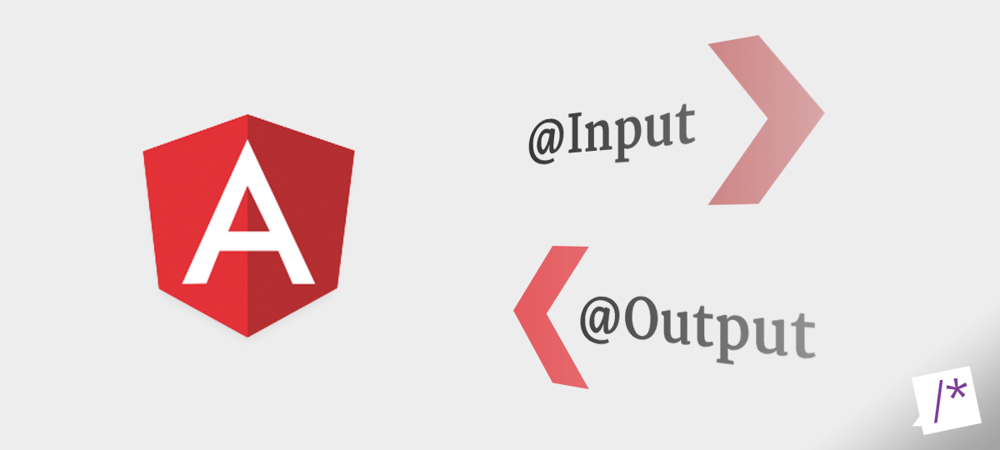

<ion-header>
  <ion-toolbar>
      <ion-buttons slot="start">
          <ion-menu-button autoHide=false menuId="first"></ion-menu-button>
      </ion-buttons>
    <ion-title>Inputs/Outputs</ion-title>
  </ion-toolbar>
</ion-header>

<ion-content color="light">
  <ion-card color="tertiary">
    
    <ion-card-header>
      <ion-card-title>
        <span>Advanced Angular Concepts</span>
      </ion-card-title>
    </ion-card-header>
  </ion-card>
  <ion-card color="warning">
    <ion-card-header color="tertiary">
      <ion-card-subtitle><span>Red = part of input child component</span></ion-card-subtitle>
      <ion-card-subtitle><span>Blue = part of value on parent component</span></ion-card-subtitle>
    </ion-card-header>
    <ion-card-content color="warning">
      <app-input [examples]="myExample" [count]="myCount" (change)="countChange($event)"></app-input>
    </ion-card-content>
  </ion-card>
  <p>
      <a [routerLink]="['/about']" routerDirecrion="backwards">Back to Grid</a>
  </p>
</ion-content>
